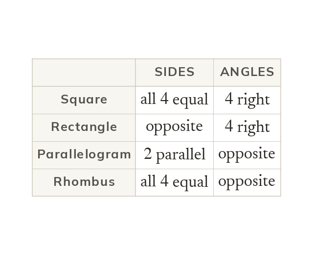

The families
Classify a quadrilateral by its sides, angles, diagonals and symmetry together. A square is a rectangle with four equal sides. A rhombus is a parallelogram with four equal sides.
A quadrilateral is classified by its sides, angles, diagonals and symmetry together, not any single feature alone. A square has four equal sides and four right angles. A rectangle has four right angles, with opposite sides equal (not necessarily all four). A parallelogram has two pairs of parallel sides and equal opposite angles. A rhombus is a parallelogram with the extra condition that all four sides are equal.